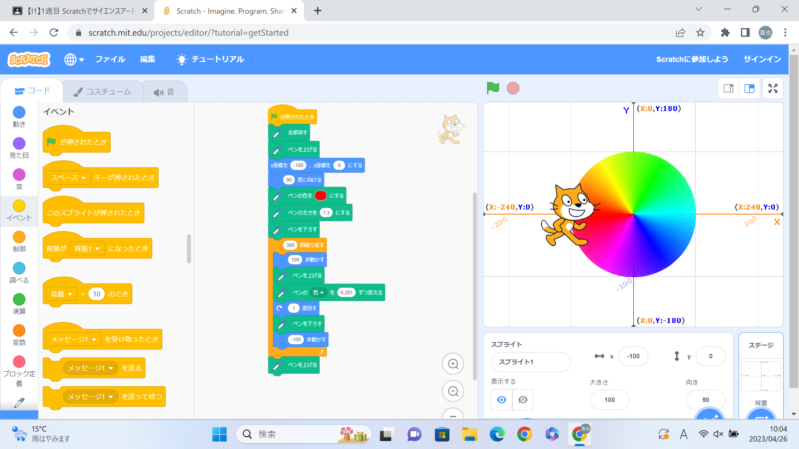
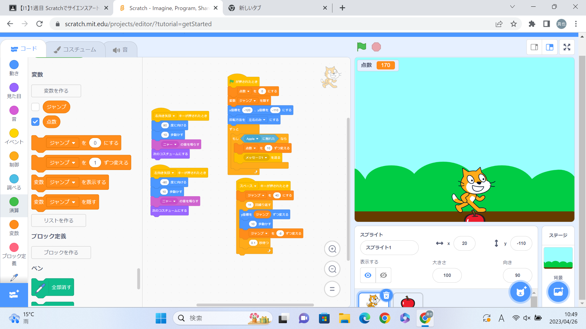

1週目のレポート ： 公大高専１年実習I-1
4a班13番 まっ
第1週目
1-1 サイエンスアート

1.内容
スクラッチを使って線を書くプログラムを作りました。キャラクターを動かして、その軌道に線が残るようなしくみです。
最初に先生に教わった通りに作ったプログラムは、角度をずらしてキャラクターを往復させることで円を作りました。
私はきれいに色が移り変わっていくようにしたかったので、円の半分までキャラクターを動かし角度を変え往復させるようなプログラムにしました。
2.感想
実際にプログラムして、想像した通りになったときに何とも言えない嬉しさがあっておもしろかったです。
しかし、今もう一度自分が作ったプログラミングの画像を見返すと無駄な部分があって、もっと簡単にすることができると思いました。
これからもっとプログラミングのことを学んで自分の思い通りに効率よくプログラムを組んでいけるようにしていきたいです。
1-2 ゲーム

1.内容
キャラクターを操作して落ちてくるリンゴをキャッチするゲームを作りました。
キャラクターには、十字キーやスペースキー押すことで左右に動かしたりジャンプしたりできるようにし、リンゴに触れると加点されるようにしました。
指定されたスペースのどこかににランダムな速度で落下するリンゴを発生させ、キャラクターがリンゴに触れると非表示になるようにしました。
2.感想
このゲームを作るときに作ったプログラムについては時間が足りなくて、どこをいじればどんなふうに変わるのかをためせなっかったので試してみたいです。
今回のようにキャラクターを操作させられることができるのなら、もっと複雑なゲームも時間をかければ作れるのではないかと思いました。
1-3 ホームページ作成
私のホームページ
1.内容
自分のホームページをgithubを活用して作りました。
index.htmlから内容を編集して自己紹介文のようなものを作りました。
2.感想
思っていたよりも簡単にホームページを作ることができたので驚きました。
しかし今回は先生の言われた通りに設定しただけだったので、今度同じようにホームページを作れと言われてもできるようにしておこうと思いました。 そして、書き込んだ内容はアドレスさえ知っていれば誰でも見ることができるので書き込む内容には注意したいです。